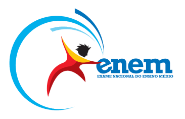
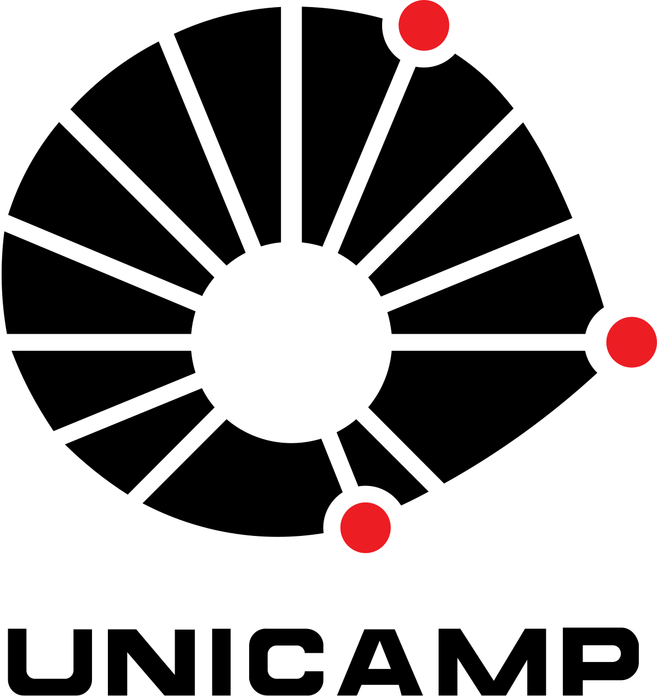
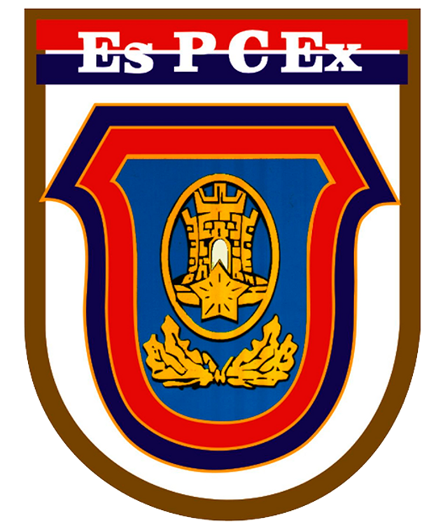

Plano de Estudos
Escolha seu plano de estudos
Encontre o plano de estudos ideal para sua jornada acadêmica! Compare diferentes vestibulares, descubra oportunidades e organize sua preparação de forma personalizada para alcançar seus objetivos.
SSA
O vestibular seriado para ingresso na UPE funciona em três etapas, correspondentes aos três anos do ensino médio.
ENEM

O ENEM é o exame nacional do ensino médio, aplicado em todo o país, servindo como porta de entrada para universidades públicas e privadas.
Fuvest
A Fuvest é o vestibular da Universidade de São Paulo, uma das maiores e mais concorridas do Brasil.
Unicamp

O vestibular da Unicamp seleciona alunos para a Universidade Estadual de Campinas, referência em diversas áreas acadêmicas.
Unesp
A Unesp realiza seu próprio vestibular para selecionar estudantes em mais de 30 cidades do estado de São Paulo.
UFPR
A Universidade Federal do Paraná aplica vestibular tradicional e é uma das mais antigas instituições de ensino superior do país.
ESA
A Escola de Sargentos das Armas forma sargentos para o Exército Brasileiro em diversas áreas de atuação militar.
EsPCEx

A Escola Preparatória de Cadetes do Exército prepara jovens para seguirem carreira como oficiais do Exército Brasileiro.
Colégio Naval
O Colégio Naval é a porta de entrada para a carreira de oficiais da Marinha do Brasil.
ITA
A Academia da Força Aérea forma oficiais aviadores, intendentes e de infantaria da Força Aérea Brasileira.